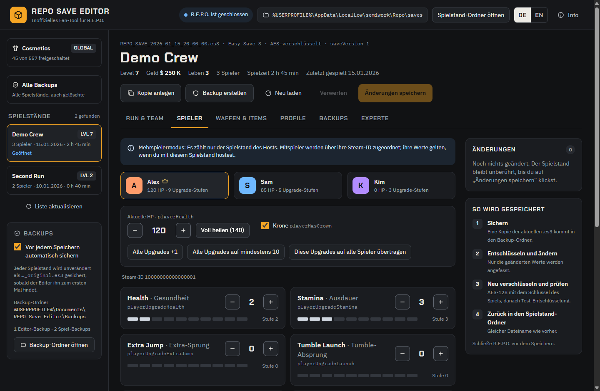
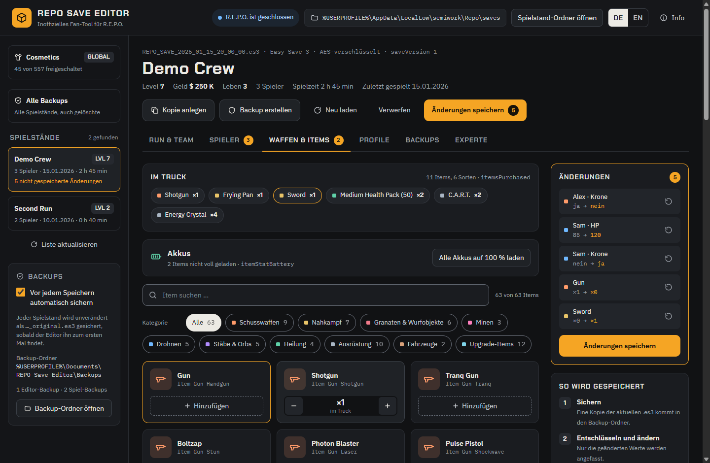
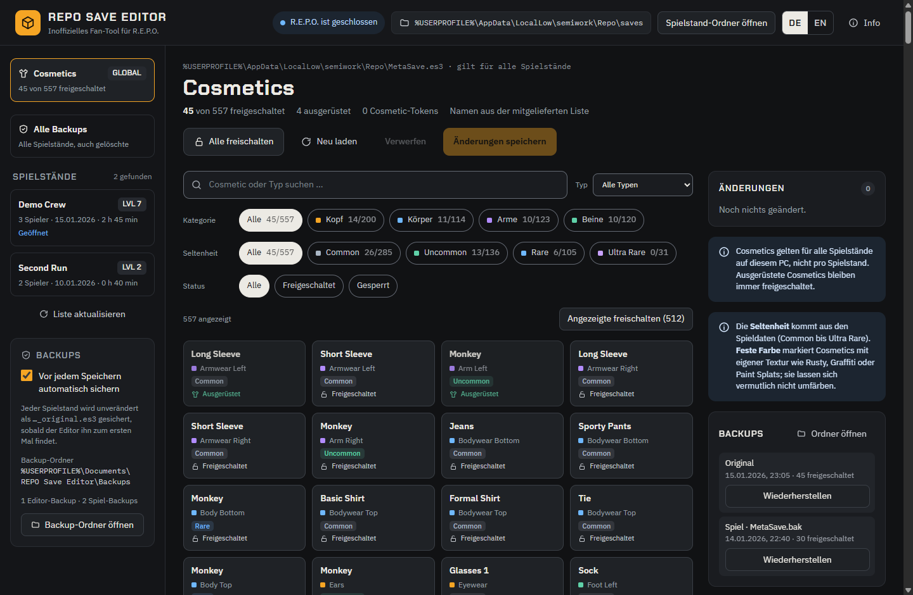
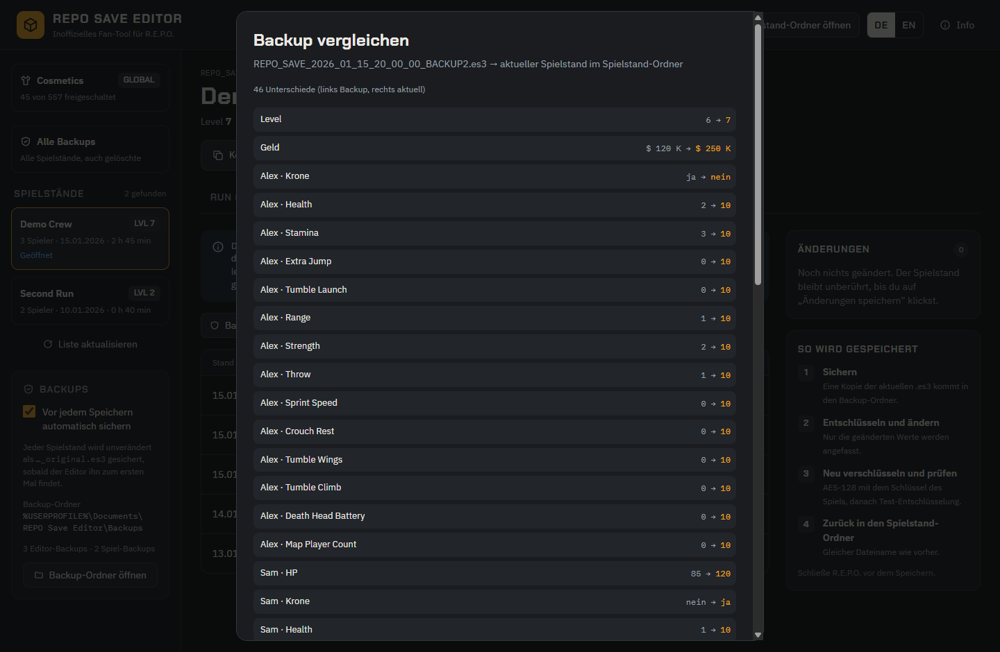
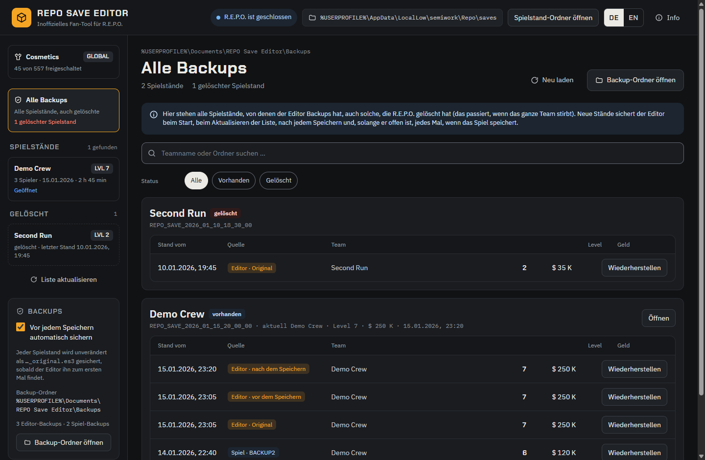

Kompatibel mit dem Sunstone Update · R.E.P.O. 0.5.0 · ab Editor 1.1.2
Inoffizielles Fan-Tool für R.E.P.O. · Windows
Save Editor für R.E.P.O.
R.E.P.O.-Spielstände sichern, bearbeiten und wiederherstellen: Run-Werte, Spieler-Upgrades, Waffen und Items im Truck sowie alle 557 Cosmetics. Jeder Spielstand wird gesichert, bevor etwas geändert wird.
- Kostenlos und Open Source (MIT)
- Deutsch und Englisch
- Keine Telemetrie, kein Internetzugriff

Was du bearbeiten kannst
Spielstand wählen, Werte ändern, Liste der Änderungen prüfen, speichern. Jede Änderung steht mit „vorher → nachher“ in einer Liste und lässt sich einzeln zurücknehmen, bevor etwas geschrieben wird.
Run & Team
Teamname, Level, Geld, Leben, Ladestation und Gesamtbeute. Die Kaufzähler, nach denen sich die Upgrade-Preise im Shop richten, lassen sich zurücksetzen.
Spieler
Alle 13 Upgrades pro Spieler, von Health und Stamina bis Tumble Wings und Map Player Count, dazu aktuelle HP, „Voll heilen“ und die Krone.
Waffen & Items
Jedes der 60 Items des Spiels in den Truck legen oder herausnehmen und Akkus aufladen. Items, die das Spiel als unfertig (WIP) markiert, sind gekennzeichnet.
Cosmetics
Einzelne, gefilterte oder alle 557 Cosmetics freischalten. Filter nach Kategorie, Typ, Seltenheit (Common bis Ultra Rare) und Status.
Backups
Alle Backups aller Spielstände in einer Liste, mit Teamname, Level und Geld. Jedes Backup mit dem aktuellen Stand vergleichen und mit einem Klick wiederherstellen.
Profile
Mitgelieferte Schnellprofile und eigene, auf jeden Spielstand anwendbar. Kopie anlegen erzeugt einen neuen Slot zum gefahrlosen Ausprobieren.
Expertenmodus
Den kompletten Spielstand als JSON bearbeiten. Werte lassen sich ändern, der Aufbau des Spielstands bleibt erhalten.
Zwei Sprachen
Deutsch oder Englisch, Umschalter oben rechts. Ohne Wahl gilt die Windows-Sprache.








Gelöschte Spielstände zurückholen
R.E.P.O. löscht einen Spielstand, wenn das ganze Team stirbt. Die Backups des Editors bleiben: Gelöschte Spielstände erscheinen links unter Gelöscht, und Alle Backups listet jedes Backup jedes Spielstands mit Teamname, Level und Geld. Wiederherstellen legt den gelöschten Spielstand neu an, und er erscheint wieder im Spiel.
Der Editor sichert jeden neuen Stand eines Spielstands beim Start, beim Aktualisieren der Liste, nach dem Speichern und, solange er offen ist, jedes Mal, wenn das Spiel speichert. Lass ihn beim Spielen offen, dann ist jedes erreichte Level gesichert.


Vorsichtig mit deinen Spielständen
- Sobald der Editor einen Spielstand zum ersten Mal sieht, behält er eine unveränderte Kopie.
- Vor jedem Speichern wird die aktuelle Datei gesichert, direkt danach auch der gespeicherte Stand (außer du schaltest das aus). Vor dem Wiederherstellen wird immer gesichert.
- Gespeichert wird nur, wenn R.E.P.O. geschlossen ist und das Spiel die Datei seit dem Laden nicht verändert hat.
- Nach dem Verschlüsseln wird die Datei testweise wieder entschlüsselt; erst dann wird sie in einem Schritt geschrieben. Nur geänderte Werte werden angefasst.
- Der Editor sendet nichts ins Internet: keine Telemetrie, keine Update-Prüfung, keine externen Inhalte.
- Aktuelle Releases werden auf GitHub aus dem veröffentlichten Quellcode gebaut und getestet, mit einem prüfbaren Herkunftsnachweis.
Installieren
REPO-Save-Editor-Setup-<Version>.exeaus dem neuesten Release herunterladen und ausführen.- Der Installer ist nicht signiert. Windows zeigt deshalb eventuell „Der Computer wurde durch Windows geschützt“: Weitere Informationen → Trotzdem ausführen.
- Standardmäßig wird nur für deinen Benutzer installiert, ohne Administratorrechte, mit Verknüpfungen auf dem Desktop und im Startmenü. Deinstallieren über Windows-Einstellungen → Apps; deine Backups und Profile bleiben erhalten.
Voraussetzung: Windows und ein installiertes R.E.P.O. – das Passwort der Spielstände liest der Editor aus den Spieldateien. Vor dem Speichern R.E.P.O. schließen.
Fragen
Funktioniert der Editor mit dem Sunstone Update?
Ja. Ab Version 1.1.2 liest der Editor die Item- und Cosmetic-Listen von R.E.P.O. 0.5.0 (Steam-Build 26294889), die das Update neu aufgebaut ablegt. Die neuen Items (Leaf Blower, Human Adventure Cable) und die 10 neuen Cosmetics sind dabei, und damit bearbeitete Spielstände laden und funktionieren im Spiel. Items, die das Spiel als unfertig (WIP) markiert, sind gekennzeichnet; legst du eines in den Truck, zeigt der Editor einen Warnhinweis.
Wo speichert R.E.P.O. die Spielstände?
In %USERPROFILE%\AppData\LocalLow\semiwork\Repo\saves, ein Ordner pro Spielstand. Die freigeschalteten Cosmetics stehen eine Ebene höher in MetaSave.es3. Der Editor legt seine Backups unter Dokumente\REPO Save Editor\Backups ab.
Mein ganzes Team ist gestorben und der Spielstand ist weg. Bekomme ich ihn zurück?
Ja, wenn der Editor ein Backup davon hat: Alle Backups oder links den Bereich Gelöscht öffnen und Wiederherstellen klicken. Lass den Editor beim Spielen offen, dann ist jedes erreichte Level gesichert.
Funktioniert das im Mehrspielermodus?
Es zählt nur der Spielstand des Hosts. Mitspieler werden über ihre Steam-ID zugeordnet; bearbeite den Spielstand also auf dem PC des Spielers, der hostet.
Wann tauchen neue Items im Spiel auf?
Items, die du in den Truck legst, erscheinen beim Laden des nächsten Levels. Cosmetics gelten für alle Spielstände auf deinem PC, nicht pro Spielstand.
Was passiert nach einem Spiel-Update?
Item- und Cosmetic-Liste werden automatisch neu aus den Spieldateien gelesen. Legt das Spiel sie anders ab, nimmt der Editor seine mitgelieferten Listen, bis eine neue Editor-Version folgt. Ändert sich das Spielstand-Format selbst, verweigert der Editor das Lesen, statt etwas kaputt zu machen.
Warum warnt Windows vor dem Installer?
Der Installer ist nicht signiert, Windows kennt deshalb seinen Herausgeber nicht. Der Quellcode ist öffentlich, und aktuelle Releases werden auf GitHub mit Herkunftsnachweis gebaut: gh attestation verify <Setup>.exe -R Firetoox/REPO-Save-Editor zeigt, dass die Datei aus dem veröffentlichten Code stammt.
Editor holen
Kostenlos, für Windows, auf Deutsch und Englisch.